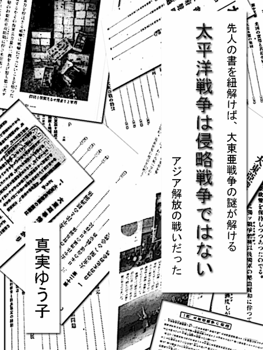

| 太平洋戦争は侵略戦争ではない、アジア解放の戦いだった | |
| 真実ゆう子 | |
| Say True jp (2013) | |

太平洋戦争と称される大東亜戦争は、侵略戦争ではなく「アジア解放の戦い」であり「東亜民族の解放戦」でした。
学者でもない無名の私が、いきなりこんな事を書くと「馬鹿じゃないの？」と軽くあしらいたくなるでしょう。
しかし、これは、私の希望的な妄想や保守系のジャーナリストたちの言葉の受売りで、発言しているのではありません。
私は、降霊技術やイタコ芸の特技など持っておりません。
大東亜戦争、真っ只中の昭和十七年に出版された書籍に、そうハッキリ書かれてあったので「当時の日本人は、アジア解放の戦い、東亜民族の解放戦をしたのだ」と断言します。
当時の日本人は、「日本の周辺のそれぞれの国、それぞれの民族が独立して助け合うのが正しい道」と信じて、大東亜共栄圏という新しい理念の建国をしようとしていたのです。
そう言わざるを得ない書物が、国立国会図書館に数冊残っています。
書籍には、次のように書かれています。
「大東亜共栄圏の確立とか、大東亜新秩序の建設ということは、ある国家、又は、地域を征服したり、併合したりすることを意味しないのであって、植民地としての状態の解放、奴隷としての民族の解放は、世界を通じての正しい道理である」
これは、日本を建国した神武天皇の詔がベースになっていました。
侵略して詐取することしか考えられない外国の方や、日本人になりすましている韓国朝鮮系の方達には、日本人の考えなど理解できないでしょう。
ちなみに、この大東亜共栄圏の建設ですが、「刃向かうものは撃滅する」ということも書かれています。
この書は、国立国会図書館の近代デジタルライブラリーで発掘した戦時中に出版された書籍で、戦後体制の脱却のお手伝いを目指します。
戦時中に出された本は、著作権が切れています。
作者不明のものなど、次々とデジタル化されています。
インターネット環境さえあれば、近代デジタルライブラリーは誰でも簡単に見られ、読みたい部分をＰＤＦファイルという形式で保存できます。
実は、最初、三十冊ほどの書物で一冊を書き上げかけたのですが、左翼思想が主流のマスコミで売り込むのは、とても危険であるため電子書籍で小出しに出版することにしたのです。
発掘した書物については、後に文中で明らかにしていきます。
すべての日本人必見の書を発掘したという、自信を持っています。
私は、ここ数年、政治や歴史に関する本を手にする時には、作者や監修者のバックボーンをまず調べることにしています。
そこで、左翼思想の人の書籍については、問答無用で却下しています。
しかし、資料がそれしかない場合は、書かれた情報を鵜呑みにしないように、汚いモノを観察する気持ちで文章を追って参考にしています。
反日思想、悪意に満ちた捏造文章を見つければ、その文章を、筆者以上の悪意を持って浮上させ、罵りながら周知に使うといった姿勢で本と向き合っています。
私は、自民党政権下の麻生内閣当時、二〇〇九年（平成二一年）一月から、真実ゆう子というペンネームでブログを始めました。
「表現の自由を最大限に活用して、真実を言いまくってやる」が、ペンネームの由来です。
様々な日本の問題を浮上させ、ネタの情報ソースを明らかにして紹介してきました。
ブログの周知、拡散は、キャラクター勝負です。敵人とは、触れ合わない議論なんてする気など全くない私は、蔑称も使います。日々おちょくり、ふざけて悪態をつきながら周知していました。
とにかく、日本は危険な状態に置かれていることを伝え、「日本人は、お人好しを封印しろ！」と、警告してきました。
ブログのタイトルは、「ねぇ、知ってたぁ？」。
私がこのブログを始めるキッカケとなったのは、麻生太郎氏へのマスコミの捏造報道や攻撃が尋常でなく、「このやり方は、日本人の感性ではない」と感じたからです。
麻生総理を、何としても守らなければ・・
「偏向報道が日々平然と行われている事実を、視聴者に何としても伝えなければ」という使命感に駆られました。
二〇一一年夏からは、ブログを更新せずツイッターに移行。時々、動画作りをやっています。
しかし、私は、活動家ではありません。
右翼活動や政治的な保守活動をする気など、全くありません。
皆さんより早く、マスコミが在日コリアンたちに乗っ取られ、まともな報道がなされていないことを知ってしまいました。
やむにやまれぬ大和魂から、日々、無料奉仕で周知活動をしてしまったというのが本当のところです。
これから、引用していく書物、私が発掘した大東亜戦争について書かれた書籍については、ブログやツイッターで紹介していません。
見つけた瞬間に周知しようかと思ったのですが、保守を狙った詐欺師に活用されるのはごめんです。
また、ジャーナリストたちに無料のブレーン代わりに利用される前に、まずは、自分の作品にしておく必要があると考えました。私は、映像作りや活字で生きてきたのです。
先人の書を紐解くのは、結構、大変です。
戦時中の漢字は、旧字です。
また、先人の日本人の語彙が豊富すぎるのと、今使われていない言葉がふんだんに使われているため難解です。
旧字の解読は、手書き入力ができるカシオの電子辞書で行い、意味は、インターネット上のデジタル大辞泉などで調べました。
昔の言葉遣いと現代の言葉遣いは、微妙に違いました。
下手に別の言葉を選んで、意味が変わってくる危険があるものは、読み方と意味を添えていきます。
旧漢字を現代漢字に変換、ふりがなを現代のものに変えました。
引用する文章は、文体を変えずに読みやすいように引用していきます。
尚、キンドルのタブレットＰＣで、この書を読まれている方は、もし解らない言葉が出てきた場合、その言葉をロングタップ（長押し）をしてみてください。
辞書機能が立ち上がり、言葉の意味が出てくるのでとても便利です。
私の妄想や憶測で、この書を仕上げるつもりはありません。
情報ソースを明らかにし、どの本のどの頁に記載されていたのかを記します。
ちなみに、私は反米ではありません。
強烈な嫌韓ですが、中国に関しては、中共憎んで中国人を憎まずというスタンスです。
どうやら、今の日本は、まだ戦時中のようです。常に情報戦、心理戦が行われています。
日本人の精神を骨抜きにする工作をしている輩たちに、反撃したいと思いませんか？
英霊や先人、ご先祖様達に感謝し、戦後体制の脱却は、私達の代で行うべきだと思います。
とにかく、先人の日本人は、侵略戦争をしたのではありません。
戦時下に出版された「戦争に対する考え」、「戦争の心得」が明確に書かれた書物を発掘しました。
まずは、この書で本当の歴史を紐解いてください。
私と同じ大和民族が、これまで封印されていた事柄を知り、安倍晋三総理が提言する戦後レジューム(体制)の脱却をしましょう。
これまでのモヤモヤした気持ちを払拭し、日本人に生まれた喜びを、分かちあえることを望んでいます。
真実ゆう子
領土を侵略、攻撃してくる敵国の敵人がいる限り、防衛する必要がある。
時折、「戦争責任は誰にあるのか？」などという議論をやっている。
しかし、そんな議論は時間の無駄だ。
我々日本人は、散々、「戦争は悪いこと」と教えられ刷り込まれてきた。
しかし、攻撃されたら反撃する。侵略されたら侵略者を殺す。武力衝突をするのは、当然のことである。
日本国憲法は、平和憲法ではない。
アメリカが、日本国と日本人を腑抜けにするために作った憲法である。
こんな当たり前の事を、堂々と言えないのが今の日本だ。
言わせないようにしている奴らの正体は、偽の日本人。
日本人になりすました、コリア系の人たちではないのか？
私は、色々調べてみて「大和民族が持っている日本人特有の感覚は、台湾などの親日国以外には適応してはならない」という結論に達している。
敵国の敵人に対しては、日本人のお人よしは封印すべきだ。
戦後の混乱時に、どさくさに紛れて入りこんだ密航犯罪者の子孫たちは、問答無用で一律排除した方がよい。
とにかく、自分が悪いことをしないのだから相手も悪いことをしないなんて思う性善説は捨て、それぞれの民族を研究しそれに合わせた対応をすべきである。
[戦争と国際問題］（著者・大倉要）という本がある。
この書は、大東亜戦争が開戦した翌年の昭和十七年（一九四二年）に出版された本で、東京軍事教育研究会と蔵王閣という所から同時出版している。
太平洋戦争と称される「大東亜戦争」については、この書籍を検証するだけでよいと言っても過言ではない。
当時の日本政府やアジア諸国がどんな立場に置かれていたのかや、戦争に踏み切った経緯がわかる。
また、イギリスとアメリカなどの欧米諸国が、侵略した国やその民族に対してどのように詐取、弾圧していたのかも記されている。
まず、次の四つの公文書が原文のまま記載されている。
「詔書」、（対米英、宣戦布告に際し。一九四一年（昭和十六年）十二月八日配布分）。
※詔書は、天皇陛下が発する公文書である。
「帝国政府声明文」（一九四一年（昭和十六年）十二月八日）。
「日米交渉の経過」（外務省公表）
帝国政府の対米通牒（一九四一年（昭和十六年）十二月七日）
まずは、「序」を引用しよう。
『序
本書は、戦時国民必須の常識、涵養（※「水が自然に染み込むように、無理をしないでゆっくりと養い育てること」）に、資せん（＝役立つ）ことを期して生まれたものである。
内容を「大東亜戦争篇」と「国際問題篇」とに大別し、その各編につき最近の重要問題を取り上げて解説を付してあるから読者は、必要に応じ、それぞれの章節によって、その要望を充たし得るべく、また前編を通読することによって雑多の短節の繋がりと集まりの中から自らに日本と世界の動きを知り、国民必須の常識を会得することができるだろう。
筆者識』
この書で、大東亜戦争について「地域的戦争を意味しない」、「大東亜共栄圏の確立や大東亜新秩序の建設とは、ある国家または地域を征服したり、併合したりすることを意味しない」と記されている。
また「植民地としての状態の解放、奴隷としての民族の解放は全世界を通じての正しい道理」とはっきり明記している。
我々日本人は、日本軍は卑劣な存在であり侵略戦争を行ったと刷り込まれ、散々、罪悪感、贖罪意識を植え付けられてきた。
太平洋戦争が、大東亜戦争と称されていたことを知らない人も多い。
日本は、敗戦後、連合国軍最高司令官総司令部 （以下、ＧＨＱと表記する）支配下に置かれた。
ＧＨＱによって「大東亜戦争」は、「太平洋戦争」という呼び方に変えられてしまった。
ウォー・ギルト・インフォメーション・プログラム（War Guilt Information Program、略称ＷＧＩＰ）という「戦争についての罪悪感を日本人の心に植えつけるための宣伝計画」が、日本占領管理政策として行われたといわれている。
戦後、「真相はかうだ」「真相箱」「質問箱」と名称を変えながら、ラジオ放送が行われ昭和二一年には、[真相はかうだ 第１輯］（著者、連合軍総司令部民間情報教育局 編、出版、聯合プレス社）が出版されている。
そのため私は、敗戦後に書かれた書物を全く信用していない。
とにかく「日本人は悪いことをして、アジアの人たちに迷惑をかけた」と思い込まされ、常日頃、そう刷り込まれてきた。
しかし、日本に対して恨みを抱いているのは、韓国、北朝鮮、そして中国の人たちであり、台湾など他のアジアの人たちは日本に感謝しているのはなぜだろう。
[戦争と国際問題］という書籍には、「なぜ、大東亜戦争と名付けたのか」、また「なぜ戦争をしなければならないのか」や、当時の白人支配の卑劣さなどが詳しく書かれている。
正直、私にとっては、日本軍が侵略していようがしていまいが、そんなことなどどうでもよかった。
私は、日教組教育を受けてきた、究極の個人主義である。
「弱肉強食。戦争だから、人も殺すでしょ」というクールな考えだった。
大体、私は戦争中に生まれていない。そんな昔の事なんか知らないし、どうでもいいと思っていた。
「スパイやテロリスト、侵略者を殺してこその平和だ。敵国の敵人の命なんてどうでもいい。たとえ乳飲み子を抱えていても同情は禁物であり、そんな一族なんて、有無も言わさず始末してしまえ」というのが私の持論だ。
「敵国の敵人の心なんて傷つこうがどうなろうが関係ない。むしろ、精神的にダメージを与えて近付けないようにしてやれ」と思っている。
これに対して、よく過激だといわれる。
しかし、「そうしなければこっちが殺されてしまう。対話、話合いなど無駄なので問答無用で始末した方がいい」と畳みかけたくなる。
乳飲み子もあっという間に大人になり、敵人に育つ可能性がある。
我々は、敵国の敵人の子供の命なんてどうでもいいのだ。
危険因子は、徹底的に排除すべきだと私は思う。
実際、日韓併合という不潔で危険な土人だった人達を日本人にしてしまった、先人日本人の同情心、無責任な感情が今に祟っているのである。
ここは、日本国。まず守るべきは、自分たちと同じ日本国民だ。
とにかく、私は、何かといえば謝罪と賠償を求めているぎゃあぎゃあウルサイ隣国を見ては、「ほんの百年前は土人だった人達の子孫の癖に」と見下している。
「あんな一生風呂にも入らない不潔で危険な生き物なんて、ほっとけばよかったのに。あの時、始末しておけば、今頃とても静かだったろうに」と冷ややかに思っている。
今後、彼らの生態については、別に出版する予定だ。
「差別するな」と詰め寄られても、「あんなのと同じにされてたまるか」と声を大にして言わせてもらう。
「世界平和なんてただの理想であり、実際には、絶対にあり得ない」と思ってきた。
私は、この考えを変えるつもりは全くない。
ところが、私の鬼畜な考えとは裏腹に、当時の日本人は優しかった。
先人の日本人達は、世界平和を本気で考えていた。
「東亜民族の解放戦だ」、「多年に渡る暴戻な英米に対し撃滅戦の火ぶたは切り落とされた」と、白人による植民地支配からの解放戦争であることを明確に示した書物を見つけてしまった。
これまで、死人に口なし。日本兵は、汚名を着せられてばかりだった。
私は、やられたらそのタイミングに強烈に仕返ししないと気がすまない性格だ。
敵国の敵人の心は、我々の想像する以上に脆い。
口汚く罵られるのが苦手のようなので、それを活用しないなんてもったいない。
ふんだんに蔑称や不細工、気持ち悪いなど、言われたくないであろう事実を羅列して精神的に追い込めばいいじゃないと思ってしまう。
ここで本腰入れて、日本人になりすますチョン達の心を抉り反撃してやり、反日勢力を死の淵に追いやりたいと思った。
とにかく、この[戦争と国際問題］は、当時の日本人の考えや苦悩が手に取るようにわかる一冊である。
これは、近代デジタルライブラリーで、誰でも閲覧できる。
ぜひ、この書を読んで、日本を護るために戦ってくださった先人の日本人に感謝するとともに、二度と韓国を併合したときのような、お人よしな行動をしないようにしてもらいたい。
昔の書物は、漢字が旧字で、ひらがなの使い方が現代と異なるものが多い。
昭和の前半に生まれた人たちには、難なく読めると思うが非常に読みづらい。
私は、一般の人より早く、日本の政治のおかしさやその正体に気づいてしまった。
以前の私は、日本兵と聞くとなんとなく嫌な気持ちになっていた。
日教組教育の賜物か、知らず知らずのうちにマインドコントロールされていた。
しかし、それが一転して、日本兵の汚名を返上したいという気持ちになった。
その後、靖国神社に参拝したりしていくうちに、心がどんどんクリアになっていった。
ちなみに、これを執筆している時点では、グーグルなどで「大倉要、戦争と国際問題」と検索しても、本の詳細しかヒットしない。
どうやら、この書籍は、戦後、全く注目されていない出版物のようだ。
この本をきっかけとして、私は、戦時中に出版された書物を続々と発掘した。
これは、神様の思し召しと捉え、先人が書き残した書で、我々が教えられていない封印された歴史をひも解くことにした。
私は、イタコ芸などできないので、過去の文献を元に辞書を引き引き解読した、重要箇所をピックアップしながらこれを執筆する。
私と同じ大和民族系の日本人達が、先人の日本人の心に触れられる。
日本人に生まれてよかった喜びを感じ、この日本を守り抜いてくださった先人の日本人に感謝できる書を目指したい。
二〇〇〇年（平成十二年）五月、当時の総理、森喜朗氏が「神の国発言」をしたと連日、テレビ報道で叩かれていた。
森喜朗氏の行動に対しても、マスコミは執拗に叩き、森内閣の支持率を失速させていった。
私は、この当時。日々忙しく、政治に対して全く興味がなかった。
とにかく、どうでもいいことを執拗にバッシングしている、という印象だった。
日本は、神の国である。日本には、八百万の神がいるとされている。
八百万は、[古事記］に記されている神道の神々の数で、実際の数ではなく「たくさんの神々」という意味である。
私は、神社を見つけたら入って手を合わせたくなる。とにかく、立ち寄ってみたくなるほどの神社好きだ。
狂ったように神の国発言をバッシングしていた輩の正体は、真の日本人ではないと思っていた。そして、後に、その勢力を知りたくなった。
日本が神の国であること理解できない、それを否定したい連中は、日本人になりすますあの気持ち悪い朝鮮系の赤化工作員ではないのか？
改めて振り返ると、その異様な報道ぶりは、二〇〇八年（平成二〇年）首相であった麻生太郎氏の漢字の読み間違いや「カップヌードルの値段を知らなかった」という類のイジメに似た、執拗なバッシングと同じだった。
ちなみに、麻生氏の漢字の読み間違いは、普段あまり使われない難しい漢字である。
しかし、民主党の菅直人氏は、小学生低学年レベルの漢字、「国会」や「警察権」「脱却」「活気」などにもふりがなが必要だった。
自筆の色紙では、美しいという文字の送り仮名が「美くしい」と、余計な「く」が入っていた。
また、「初心を貫く 平成二十二年九月二日 菅直人」と書いたつもりだと思うが、その色紙の文字の「初」の字が、衣偏でなく示偏になっていた。
この間抜けな原稿のルビや送り仮名については、インターネット上で、散々馬鹿にされていたので、「菅直人 ふりがな」と検索すれば、何らかのブログに引っかかり画像でも確認できる。
ちなみに、民主党の党首だった岡田克也の色紙も滑稽で、「交代政権」と中国語のように書かれていた。
民主党議員は、第三国人のような人達の集りだ。
菅直人は、北朝鮮の拉致の主犯格であるシンガンスを救出したり、北朝鮮とつながっている政党・みどりの党に献金したりするコリア系帰化人、朝鮮スパイのような人である。
菅直人のこういう事実を知っている人たちは、「カンガンス」と罵り馬鹿にしている。
菅は、かなりの馬鹿総理だったのに、マスコミは、全くといって指摘しなかった。
二〇〇九年からの三年三ヶ月、民主党の歴代総理大臣、鳩山由紀夫氏、菅直人氏、野田佳彦氏については、どんなに間抜けな行為をしても露骨に守っていた。
余談だが、民主党の党首は、揃いも揃って日本人が決してやらない朝鮮式の飲み方で水を飲んでいた。
私は、これを「朝鮮飲み」と茶化して呼んだ。
今、嫌韓（韓国が嫌い）の人や反民主党のネットユーザーの間では、朝鮮飲みという言葉はポピュラーなものとなっている。
朝鮮飲みとは、横を向いて口を手で覆って口元を見せないようにする飲み方だ。
日本人から見たら実に不自然で、とても気持ち悪い飲み方だ。
インターネットで「朝鮮飲み」と画像検索して確認して欲しい。
韓国では、目上の人の前では口元を見せてはならないのが礼儀だという。
テレビは、在日コリアン企業がスポンサーとなり在日韓国朝鮮人に乗っ取られていると言っても過言ではない。
民主党に政権交代させたのもテレビ・新聞メディアであり、スキャンダルだらけの民主党に都合の悪いことを一切報道せず自民叩きを続けた。
視聴者の心に自民党＝悪のイメージをうまく刷り込んできた。
森喜朗氏の話に戻ろう。
森氏の問題発言とされた「神の国発言」は、次の通りだ。
「日本の国、まさに天皇を中心としている神の国であるぞということを国民の皆さんにしっかりと承知して戴く、そのために我々（＝神政連関係議員）が頑張って来た」
これは、二〇〇〇年五月十五日、神道政治連盟国会議員懇談会において行った挨拶の中に含まれていた言葉である。
これのどこが問題なのか？
神の国発言は、自民党、森喜朗氏を失脚させたいマスコミの格好のネタになった。
日本人の団結力に繋がる「国家神道」を、徹底的に排除しようとする動きである。
今のマスコミは、サヨク思想の人しか活躍できない仕組みになっているようだ。
在日コリアンらが、日本人になりすまして番組を作っているのではないのかと疑いたくなる。
現実、日本語が変な番組が増えてきた。
日本には、皇族を潰したい不届き者、国旗である日の丸や国歌である君が代が嫌いな輩が大勢いる。
こういう人たちを左翼と呼ぶが、日本の左翼のトップは、日本に日本人として生まれることができなかった韓国朝鮮系の人たちだと私は思う。
また、こういうことを言うと差別だと非難される。
しかし、日本人と韓国朝鮮人が、同等に扱われるなんてあり得ないのだ。
在日コリアンの通名を廃止し、彼らを他の外国人の人達と同様に扱うべきだ。
区別はしっかりするべきだと、主張すべきである。
在日コリアン達が、強制連行されてきたなんて嘘である。
昭和三四年（一九五九年）三月一四日の読売新聞夕刊に、在日朝鮮人の特集が組まれ、『食うために移住 農地奪われ、人口も激増』と見出しが書かれ、「日本へなぜ来たのか」と解説している。
「現在在日朝鮮人は、約六十一万人、このうち約九十六％が南鮮出身者。このほか密入国者、未登録者が約二十万人はいると取締当局では推定している」と記されている。
昭和三四年七月十三日の朝日新聞には、『【外務省発表】戦時徴用わずか二四五人。自由意志で在日』という記事が残っている。
在日コリアンは、強制連行されて日本に来たと言っていた。
しかし、彼らは、密入国で日本に居座った犯罪者の子孫たちであることは、もうバレている。
韓国朝鮮人のやり方は、弱者を装い同情を引く。
そして、脅して謝罪させて金をむしりとるというやり方である。
なぜ、我々日本人が、犯罪者の子孫である韓国朝鮮人なんかと同じになってやって、そのレベルに合わせてやらないといけないのか。
日本人は、お人よしすぎる。やられたらやり返すのは当然だ。
私は、こういう迷惑な輩に対しては、見下し聞こえるように罵るのが効果的と思っている。
出自などのどうしようもないコンプレックスなど、相手が気にしていることを口にし鼻で笑えばいい。
敵人に対しては、罵声を浴びせ続けるなどして、近づけない工夫をし、自己防衛くらいするべきだと思っている。
とにかく、日本政府は、戦後のどさくさで入り込んで居座り、日本名を使っている在日韓国朝鮮人を処理する必要がある。
北朝鮮も韓国も反日国家である。
北朝鮮のチュチェ思想と言われる主体思想は、日本を永遠と攻撃する思想だ。
韓国には「親日罪」という罪があり、日本好きという事が犯罪になる国なのだ。
朝鮮半島は、北も南も我々日本人にとっては敵国であり、敵人である。
そんな敵国の人達の将来なんて、我々にはどうでもいいのだ。
まずは、自分達のテリトリーや身を守るべきだ。
通名を廃止させ、彼らとは、深い溝と距離を作って、関わらないようにしていく必要がある。
とにかく、日本人は、お人よしを封印すべきなのだ。
ＧＨＱは、『大東亜戦争』や『大東亜共栄圏』、『八紘一宇』などの言葉が、国家神道を連想させるとしてこの言葉を使うことを禁止した。
そのため、太平洋戦争が大東亜戦争であることを知らない日本人も多い。
「八紘一宇」とは、第二次世界大戦中に、大東亜共栄圏の建設の標語のひとつとして用いられた言葉である。
ちなみに、八紘一宇は、「八紘為宇」ともいわれていた。
大東亜共栄圏については、いくつかの文献を引用して後に詳しく述べていく。
大東亜戦争の真実を知る上で、まずは「八紘一宇」の意味を正しく知る必要がある。
この「八紘一宇」は、日本国民、大和民族なら理解できるだろう。
実は、この言葉の意味を知って初めて、あの戦争の意味や日本人を苦しめてきた心のモヤモヤが解消されていくのだ。
そして、昔の人は、中国人や韓国朝鮮人のことを知らなすぎたのだとつくづく思う。
私は、「八紘一宇、支那、韓国、北朝鮮の特定アジアを含まず」を強く推奨する。
話を戻そう。
ＧＨＱは、書物を検閲し「八紘一宇」という言葉を徹底的に消したという。
大辞林では、八紘一宇について、「天下を一つの家のようにすること。第二次大戦中、大東亜共栄圏の建設を意味し、日本の海外侵略を正当化するスローガンとして用いられた」と書かれている。
しかし、日本は侵略国家ではない。
日本兵は、海外侵略をしたのではないのだ。
このように、日本の辞典でも「日本の海外侵略を正当化するスローガン」などと、自虐史観を植え付ける洗脳工作が行われている。
私は、「八紘一宇」の本当の意味がわかる書物を見つけた。
一九四一年（昭和十六年）に、[社会常識問答読本］（著者・尾山万次郎。出版・天泉社）の「一〇八、八紘一宇とは何んぞや」（六七頁）という項目がある。
八紘一宇という言葉は、神武天皇の詔に基づくもの。「国史を貫く大精神」と説明している。
『八紘一宇という言葉は、神武天皇の詔に基づくもので、皇化にまつろわぬ一切の禍（※「災い」）を払い、日本はもちろんの事、各国家、各民族をそれぞれ真に所を得せしめ、真に志を伸ばさせ、かくて各国家、各民族が自立自存しつつ、相寄り相助け、全体とし一団を成し、かくて何処までも発展して止まぬという意味である。
これは、我が肇国（※「建国」）の精神に発し、国史を貫く大精神である。』
「八紘一宇」は、海外侵略を正当化するために使われた言葉ではないのだ。
戦前の日本人は、それぞれの国を独立させ、それぞれの民族と一致団結することを、本気で目指していた。
大東亜戦争を理解するには、戦後の日本人が教えてもらっていない日本の神話を知る必要がある。
八紘一宇ついては、後ほど掲載する。
戦後生まれの日本人は、「日本は、侵略国家だ」と思い込まされてきた。
しかし、大東亜戦争開戦当時の日本人は、侵略する気など全くなかったのだ。
とにかく、イギリスやアメリカの植民地支配からの解放、奴隷としての民族の解放をさせ、東亜のそれぞれの独立した国々との一致団結を目指していた。
そして、各民族の地位の向上を本気で目指していたようだ。
[戦争と国際問題］の「大東亜事情早わかり」、一、大東亜共栄圏の範囲はどうか （二三頁）という項目に、次のように書かれている。
『大東亜共栄圏の確立とか、大東亜新秩序の建設ということは、ある国家、又は、地域を征服したり、併合したりすることを意味しないのであって植民地としての状態の解放、奴隷としての民族の解放は、世界を通じての正しい道理であるばかりでなく、我が国の真意は、畏くも（※「おそれおおくも」）神武天皇が、八紘を掩いて、宇と為むと仰せられた肇国（※「建国」）の大精神により、よろずの国々をして、各々その所を得せしめ、世界の平和を打ちたてようというのである。
畏くも、明治元年三月十四日、明治天皇の下し賜った御詔勅（※「天皇が文書で行うすべての行為」）には、「万里の波濤（※「大波」）を開拓し、国威を四方に宣布し、天下を富嶽（※「富士山の異称」）の安きに置くことを欲す」と仰せられている通り、この御詔勅に従い、天下を富嶽の安きに置くことが、我が国の使命であり、それを実現するための大東亜共栄圏に範囲や限界のあろうはずはないのである。』
宇は、建物・屋根・天幕などを数えるのに用いる助数詞だ。
ここでは、宇を「いえ」と読んでいる。
「八紘一宇」は、天下を一つの家のようにすること。
「天下を富嶽の安きに置く」とは、慣用句の「泰山の安きに置く」（＝中国の山の泰山のように、どっしりと安定させる）と同様、物事をゆるぎなくどっしりと安定させることのたとえのようだ。
[紀元二千六百年詔書教本］（著者・社会教育会編纂、出版・大日本教化図書）という昭和十五年に出版された書では、八紘を「あめのした」と読んでいる。
そして、「八紘を掩いて、宇と為む」は、天下を一つの家にするということを意味する語。
この天下を一つの家にするというのは、天下の人々に、仁愛の徳を及ばせ、一家族のように、穏やかで陽気に溢れた幸福な生活をさせたいというおぼしめしのお言葉であろうと解説している。
現在、この八紘一宇の言葉にすがる日本人になりすましている韓国朝鮮人がいるように感じる。
しかし、日本人は、もうお人好しを封印すべきだ。
私は、八紘一宇より、福沢諭吉氏の「脱亜論」を尊重すべきだと思っている。
何度もしつこく書くが、「八紘一宇、支那、韓国、北朝鮮、特定アジア含まず」を徹底すべきなのだ。
現在の憲法を破棄して明治憲法に戻せと言っている人達もいるが、憲法は時代に合わせて作り直すべきだ。
とにかく、日本人はお人よしを封印すべきと、肝に銘じるべきだ。
この[紀元二千六百年詔書教本］には、ＧＨＱが消し去りたかった我々日本人が誇れる歴史、日本の建国について解説されている。
[戦争と国際問題］、「四、大東亜戦争と東條宣言」（三十一頁）という項目では、「地域的戦争を意味しない」というタイトルで、「大東亜戦争」と名付けた経緯が書かれている。
『昭和十六年十二月八日、この日こそ全世界の地軸を大転換せしめた日であり、大東亜の黎明（※「物事が盛んに始まろうとする時」）を告げる歴史的な日であった。
多年に渡る暴戻（※「荒々しく道理にそむいていること」）な英米に対し、撃滅戦の火蓋は切って落とされたのである。
帝国は、この米英に対し宣戦を布告すると共に、この戦争を「大東亜戦争」と呼ぶことに正式決定した。
しかし、この対米英戦は、東亜の地域における戦争を意味するものではなく、すなわち戦争の地域性を表示したものではない。
大東亜戦争は、米英の勢力を、東亜の全域から掃蕩（※「残らず払い除くこと」）し、もって東亜人の東亜を建設し、いわゆる大東亜共栄圏を打ちたてようというのである。
かかる意味において、はじめて大東亜戦争意義が明徴（※「明らかな証拠」）され、民族解放戦たるゆえんが明らかにされるのである』
このように、日本軍は、侵略戦争をする気などさらさらなかったのだ。
[戦争と国際問題］の「東亜民族の解放戦だ」（三十二頁）という項目では、「英米の植民地支配から解放し、各民族の地位の向上に」と記載されている。
『東亜諸民族は、それぞれ一の民族と成すと共に、それが相合して広義における一民族、すなわち大東亜民族を形成している。
これは、単なる思想の仮称ではなく、現前の事実である。
まず、それは、生命協同社会とも称すべきものであり、身体的、生理的に換言すれば人種的に相近似している。
これを白人に比すれば、全くの同一の人種に属するものと言っても過言ではない。
その上に各民族が国を建てて幾千年を経ているにせよ、その間、近隣の地域に住み、共通の地縁によって、共同的な社会としての結束をいよいよ親密ならしめている。
しかしながら、東亜諸民族の同一性は、単なる事実として認めるのみでなく、それが簡単に発展融合しなければならぬ。
しかも、この民族的融合は、いまや大東亜戦争によって、いよいよ完結編に近づかんとしている。
大東亜戦争は、東亜の諸民族をその孤立から結合せしめ、英米の植民地支配から解放し、各民族の地位の向上に一段と努力を払い、各々その所を得せしめて東亜の各民族の本領を発揮せしめ、ここに大東亜共栄も確立されんとしている。』
大東亜戦争の目的は、とにかく暴力的な白人支配を排除することだったのだ。
イギリス、アメリカの植民地支配から解放して、東亜のそれぞれの国、それぞれの民族が独立して互いに助け合うことが大切だと真剣に考えていたようだ。
現代社会で言われている左翼的な共存共生とは、全く別のものである。
日本人になりすます輩に軒先を貸して母屋をとられるのは、ナンセンス。お互い嫌いでいいのだ。
現代社会では、コリア系の人達、韓国籍も朝鮮籍も敵国の敵人と認識するべきだ。
韓国人にとって、日本が好きというのは犯罪なのだ。韓国には、親日罪という罪があり、反日教育が日々行われてきた国である。
北朝鮮の主体思想（チュチェ思想）は、日帝を永遠と攻撃する思想なのだ。
私は、「日本人は、彼らとの溝を深め距離を大きく離して、関わらない方がいい」と強く思っている。
私が[戦争と国際問題］（著者・大倉要）を見つけたキッカケは、戦争開戦の昭和十六年十二月八日の新聞に掲載された「帝国政府声明文」の存在を知ったことからだ。
その後、インターネット上の国立国会図書館のサイト、近代デジタルライブラリーで「帝国政府声明文」と入れて検索したらアッサリ出てきた。
ただ、この書物がインターネットで閲覧可能なデジタル化資料になったのは、二〇一二年（平成二十四年）三月一日のこと。
それ以前に、「帝国政府声明文」の存在を知り調べていたら見つけられなかったかも知れない。
「帝国政府声明文」は、札幌ラヂオ放送の代表である安濃豊氏が発掘した。
安濃氏は、米陸軍にて雪氷科学者として勤務したご経験と、この帝国政府声明文によって「戦勝国は日本だった」という主張をインターネット上で展開している。
何度もいうように、私は「日本兵の汚名を返上したい」と思って、暇を見つけては色々調べていた。
また、私は、一九六九年に発行された「重要紙面でみる朝日新聞九〇年 一八九七～一九六七」という、重要紙面が凝縮された書籍を持っている。
これは、元々父が所有していた書籍で、子供心に広告や挿絵が面白かった。
実は、父には内緒でこっそり自分の物にしていたのだが、これだけは処分してはいけない気がして持ち続けていた。
そのため、安濃氏が発掘した「帝国政府声明文」は、簡単に見つけ出して確かめることができた。
帝国政府声明文には、日本国がいかに追い詰められ、戦争という形で戦わざるを得なかった様子が書かれている。
後で全文を掲載するが、ここでは、そのごく一部を紹介する。
現代の言葉で大雑把に要約すると、次の通りだ。
「帝国政府は、太平洋の平和を維持して、全人類に戦争の被害が広がるのを防止することを願った。
怒りや苦しみなどをじっとこらえて八ヶ月、米国との間に外交交渉を重ねた。
帝国の生存と権威との許す限り、互譲の精神（＝「思いやりを持って自分から率先して相手に譲る心」）を持って、事態の平和的解決に努めた。
アメリカとその背後にあるイギリス並びに、この両国に付和する国々の反省を求めたが、話にならなかった。
平和的手段によって、アメリカ並びに与国に対する関係を調整してきた。
しかし、太平洋の平和を維持する希望と、解決する手段は全く失われ、東亜の安定と帝国の存立がとても危険な状態に陥りここに至った」
安濃氏も動画の中でおっしゃっていたが、保守派の言論人達は、なぜ過去の資料を検証してこなかったのだろう。
結局、戦後の学者やテレビのコメンテーターたちは、開戦前後の新聞などの資料を調べることなく、語ってきたのかも知れない。
日本は、敗戦後、連合国軍最高司令官総司令部 （以下、ＧＨＱという）支配下に置かれた。
ＧＨＱ最高司令官だったダグラス・マッカーサーは、一九五一年（昭和二十六年）五月、アメリカ上院の軍事外交合同委員会にて、日本が戦争をしたのは「主に自衛（安全保障）のためだった」と述べている。
ところが、現在、日本は左翼的な人物、主にコリア系の日本人が活躍する傾向にあるようで、「日本が自衛のために戦争した」という事を認めたがらないのだと思う。
敗戦後のアメリカは、「日本が侵略戦争をした事にしたかった」ようだ。
ＧＨＱは、大東亜戦争という呼び方を禁止し、太平洋戦争という言葉に変えさせた。
日本を何としてでも侵略国家に仕立てあげたいという意思から、この帝国声明文の存在をなき物にしたようだ。
しかし、真実はひとつである。
日本は、自衛のために戦争を行った。
二〇一二年三月三十日、産経新聞に『「日本は自衛戦争」マッカーサー証言 都立高教材に掲載 贖罪史観に一石』という記事が掲載された。
これによると、「日本が対米戦争に踏み切った理由について、連合国軍総司令部（ＧＨＱ）最高司令官だったマッカーサーが、一九五一年（昭和二十六年）「主に自衛（安全保障）のためだった」と述べた米議会での証言が、東京都立高校独自の地理歴史教材の平成二十四年度版に新たに掲載される。
日本を侵略国家として裁いた東京裁判を、裁判の実質責任者だったマッカーサー自身が否定したものとして知られる同証言を、公教育の教材が取り上げるのは初めて」都の教材は、この部分の証言を英文のまま掲載し、[この戦争を日本が安全上の必要に迫られて起こしたととらえる意見もある］としているとのこと。
今後、[戦争と国際問題］（著者・大倉要）を、現代の日本語にして、教科書に載せれば解決するだろう。
日本は、大東亜共栄圏の肇国を目指していた。
肇国とは、建国のこと。しかし、これは、侵略を意味するものでない。
日本の周辺のアジア諸国を独立させそれぞれの国、それぞれの民族と精神的、実質的な繋がりを意味していた。
すべては、日本を建国した神武天皇の教えに基づいていることは、先に述べた。
戦後、ＧＨＱは、日本国民の天皇陛下に対する神格化をやめされるために、人間宣言をさせた。
そして、戦後生まれの日本人は、学校教育において天皇陛下の「人間宣言」を実に印象深く教えられる。
人間宣言とは、昭和二十一年（一九四六年）一月一日に官報により発布された昭和天皇の詔書のことである。
日教組（日本教職員組合）は、北朝鮮に研修に行く反日集団だ。
「教え子を再び戦場に送るな」という一見、耳触りのよいスローガンを掲げている。
国旗国歌を反対している気持ち悪い教師の集まりである。
日本には、国歌、君が代も否定する日本が嫌いでたまらない人達がいる。
結局、こういう人たちは、日本に、日本人として生まれられなかった朝鮮白丁、韓国では棄民扱いされている人ではないのか？
これまで、在日と言われる密入国で居座った韓国朝鮮人の話題は、タブーとされてきた。
我々日本人は、神武天皇が、日本国を建国したことすら教えてもらっていない。
とにかく、先人の日本人は悪いことをしたという自虐史観を植え付けられ、何ひとつ誇れることを教えられないようにされてきたようだ。
また、学校教育において、皇室や建国については全く教えられない。
日本は、世界で唯一、皇帝が現存している国であり、日本が最も長い歴史を持っていることを知らない日本人は多い。
大東亜戦争を語るにあたって、神武天皇の存在や日本の建国について知らなければ全く話にならない。
大東亜戦争の目的の説明で頻繁に出てくる「大東亜共栄圏建設」とは、神武天皇のご意志、ご慈愛がベースとなっていたのである。
[戦争と国際問題］の「世界史的な東條宣言」（三十二頁）というタイトルでは、次のように書かれている。
『東條首相は、第七十九議会、劈頭（※「最初。冒頭」）の施政方針演説において、雄大な肇国の大精神に基づく、大東亜共栄圏建設の構想を公式に全世界に闡明（※「明らかにする」）した。
これが、いわゆる東條宣言と称されるものである。
大東亜戦争の現段階においては総力を挙げて、果敢（※「決断力がある」）なる武力戦を遂行し、徹底的に敵を撃滅し、これを併行して重要資源を確保し、戦争遂行を強化せしめて行くことが、帝国当面の最大の目標であることは勿論である。
東條宣言は、この当面の任務を裏付ける最高経綸（※「国家の秩序を整え治める」）を端的に要約したものであって、その根本的理念は、あくまで肇国の精神であり、米英の搾取的な植民政策と、全然、異なるものであること明瞭である。
すなわち、大東亜の国家、民族をして各々その所を得せしめ、道義に基づく共存共栄の新秩序を建設せんとするにある。
しかし、共栄国建設は、帝国を核心とする東亜諸民族の共同の運命に立つものであるから、東亜防衛のため絶対に必要な地域は、帝国が把握すべきことは当然であり、香港、マレーが多年、英国の東亜かく乱の拠点であった事実からして、帝国が東亜防衛の拠点として把握すべきは、大東亜経綸上、必須のことである。
その他の地域については、民族の伝統、文化に応じ適当な措置に出ることが言明され、フィリピン、ビルマは、民衆が帝国の真意を了解し、共栄国建設に協力するならば、独立の地位が与えられるべきこと、また蘭印（※「蘭領印度の略＝マレー諸島およびニューギニア島西部の旧オランダ領有時代の称。第二次大戦後にインドネシアとして独立）、豪州（※「オーストラリア」）に関しては抗戦を続けるならば、これを撃滅するが住民が協力して来るならば、その福祉と発展を支援する旨を宣言させられた。
大東亜興隆（※「勢いが盛んになること」）を念願として構想せられた、この大東亜共栄圏建設方策により、東亜諸民族は、帝国の真意を理解し、今後、翕然（※「多くのものが一つに集まり合うさま」）として、建設戦に参加し来ることが予想せられ、この意味において、東條宣言は、大東亜建設の大いなる炬火（※「たいまつ、かがり火」）として、世界史的な意義を有するものである。』
しつこく記載するが、攻撃してくる者に対して反撃するのは当然である。
かなり前の話しだが、ＢＳ放送の番組で、朝鮮系の出演者が「攻めてこられても殺さない決意をする」なんて言っている気持悪い番組があった。
ユーチューブやニコニコ動画に動画があがっていたので見てしまったのだが、「馬鹿馬鹿しい。攻められたら殺すだろう」と思った。
何度も書くが、私は、死刑推進派だ。危険因子を、この世から消してこその平和だと思っている。
スパイ、テロリスト、侵略者は、軽く死刑。問答無用で射殺。一族、殺すべきだという考えは変わらないだろう。
こういうことを言うと過激と言われ、非難される。
しかし、敵国の敵人の心や命なんてどうでもいいと思わないと、自分たちのテリトリーを守れない。
私は、憲法九条を守れとか言っている奴らのトップは、朝鮮人みたいな人達だらけだと冷ややかに見ている。
実際、九条の会のノーベル文学賞を受賞した大江健三郎は、北朝鮮の金日成を礼賛する人だ。金日成の写真一枚で骨抜きになると週刊誌に書かれていた。
また、中国人の翻訳家に「日本人であることがイヤだ」と手紙を送っていた。実に気持ち悪い朝鮮人みたいな人なのだ。
日本国籍でも心は朝鮮にあり、本物の日本人じゃないということだろう。
昭和十七年に出版された[亜細亜民族と太平洋］（著者、松本悟朗、出版、誠美書閣）にも、しっかり「アジア解放の戦い」と記されている。
序では、次のように書かれている。
『大東亜戦争の幕はついに切って落とされた。
今や、三百年来白人の侵略と蹂躙（※「暴力・強権などをもって他を侵害すること」）下に、任されてきたアジア＝太平洋が、長い間待ちに待った自主性回復の日が来たのだ。
東海の一角に、富士の霊峰を抱いて、司令塔の如く浮かび立つ島国日本は、アジア＝太平洋の意思を代表して奮然と立ち上がったのだ。
日本の意志は、そのままアジアの意志であり太平洋の意志である。
戦いは、そのままアジア解放の戦いであり太平洋解放の聖戦である。
アジアに日本が存在することによって、太平洋は重大な意義を持ち、種々の形態においていわゆる太平洋問題が繰り延べられてきた。
同時に、アジアに日本が存在することによって、太平洋問題は、その正しき解決に到達する日が来たのだ。
アジア＝太平洋の問題は、その侵略者たる白人の手によって解決するべきはずはない。アジア＝太平洋の運命を決するものは、アジア＝太平洋民族自身でなれけばならない。
日本国民はアジア＝太平洋民族なるが故に、その一切の行動は本能的にアジア＝太平洋的であり、従ってアジア＝太平洋の進むべき正しき方向を目指している。
それはアジア＝太平洋の解放と自主性回復へ向かって、必然的に条件づけられている。
この故に、アジア＝太平洋の宿敵に向かって宣せられた日本の大東亜戦が、本質的に何を意味し、いかなる性格を有するかは、一点疑問の余地はない。
アジア諸民族は、一切の狐疑逡巡（※「疑いためらってぐずぐずすること」）を排して、即刻、旭日の旗の下に馳せ参じなければならない。
太平洋戦の砲声と爆音とは、アジア＝太平洋の黎明（※「夜明け」）を告げる警鐘である。
この小著は、太平洋の一般性格、その白人による被侵略の歴史、強国日本の抬頭（※「あるものの勢力が伸び、進出すること」）、太平洋諸問題の性質、やがて、今次、大東亜戦勃発への必然性、その性格と意義等などを明らかにせんとしたものである。
説いて微に入ることは、この小冊子のよくすることではないが、一般国民に必要な概観的知識を与えるには足りると思う。
以上の意味において、多少とも読者の期待を満たし得れば大幸である。
皇紀二千六百二年二月八日 著者 しるす』
あの大東亜戦争がなければ、日本国や日本人、日本国の周辺のアジア諸国の未来は、悲惨で苛酷なものだっただろう。
日本が侵略者呼ばわりされるようになった経緯が、[亜細亜民族と太平洋］、「大東亜戦争の根本意義」（三三九頁）という項目で書かれている。
『二 大東亜戦争の根本意義
西洋人はアメリカを発見し、アジアを発見し、太平洋を発見したと称している。
だが、これほど、西洋人の自己本位を暴露した見解はない。
彼らの見解によると、彼らが発見するまで太平洋やその周辺に、あたかも人類は住んでいなかったようである。
ところが、実際は、そこにアジア人が住んでいたのみではなく、早くから堂々たる文化が栄え広がっていたのである。
アジアは、いうまでもなく、太平洋からアメリカにかけて古代からアジア人が住んでいた。
元来、アメリカ・インディアンなるものは、アジアからの移住者であり、彼らこそは最も古いアメリカ発見者なのである。
そして、このアメリカとアジアの間に広がっているのが太平洋であり、そこに住む者もまたアジア人であって、太平洋は元来アジアの海であり、アジア人の生活空間なのである。
世界最古の文化が、スメル文化（※「シュメール文化＝古代バビロニア南部の地名。また、そこに住む民族」）と称するものであったことは、今日では、世界の定説であるが、これは、かつてペルシャ地方から起こり、西はエジプトやギリシャ方面に、東はインド方面まで広がったといわれている。
すなわち、この世界最古の文化はアジアの文化である。
それほど太古に遡らなくとも、インドや支那における燦爛（※「光り輝くさま」）たる古代文化も、或いは西南アジアから太平洋を渡って中南米にまで及んだ巨石文化も、すべてアジアの文化である。
かくして太平洋とその周辺地帯は、すべてこれアジア人とアジア文化の世界であったのである。
否な、インド洋もまたしかりで、つい数百年前には、ジンギスカンの巻き起こしたアジアの嵐は、全アジアは固より、遠くヨーロッパの果てまで吹きまくったことさえある。
かくしてアジア＝太平洋は、決してヨーロッパ人によって始めて発見されたものではない。
そこには、太古からアジア人が厳存し、またアジアの文化が光を放っていたのである。故にアジア＝太平洋の主役は、アジア人であり、また当然、それはアジア人の住家である。
しかるに、このアジア人の世界に、十六世紀末頃から漸次（※「しだいに」）ヨーロッパ人が闖入（※「突然、無断で入り込むこと」）して来たり、彼らの発見などと称して、勝手な侵略と略奪をほしいままにしたのである。
これは、すでに詳述したことで今さら繰り返す必要はないが、とにかくこの新来の客は、ただ暴力によってアジア＝太平洋をほとんどアジア人から奪ったのである。
しかも、彼らは、それを白人当然の権利として、彼ら自身が本来の主人公でもあるかのように、これに君臨し、これを支配し、そしてアジア人の犠牲において、彼らのみ富み栄え、豚のごとく肥え太ったのである。
そこへたまたま、東海の一角から日本という抗議者が現れたので、彼らは、自分らの略奪行為を棚に上げ、厚顔無恥にも、あえて日本を侵略者呼ばわりするに至った。
だが、日本こそは、生粋のアジア＝太平洋民族として太平洋のただ中に浮かぶ主力艦として、真にアジア＝太平洋の意志を代表するものであり、また天命を畏れむところのアジア＝太平洋の意志の執行者である。
従って、アジア＝太平洋の侵略者共を向こうに廻して、日本によって巻き起こされた大東亜戦争は、単なる民族争覇などという月並な戦争ではない。
また、単に日本の生存権の主張といった利権的の争いでもない。
いわんや、世界征服の野望とか、国威の伸張とかいった自己要求に基づくものでは、もちろんない。
大東亜戦は、まず、第一に白人の搾取と抑圧の手をアジアから払いのけることによって、アジアの自主性を奪還せんとするものである。
第二にそれは、アジアを正しき本来の姿に返らせると共に、アジアの復興を図らんとするものである。
第三には、アジア固有の特性を生かし、真にアジア的な新秩序と新文化とを建設し、もって新しき世界文化と新しき世界秩序とに、貢献せんとするものである。
大東亜戦争の意義はしかく重大であり、真に世界史の一大転換を意味するアジア革命戦であり、同時に世界革命戦である。
それは、今なお、海賊本能に生きる反動的アングロ・サクソン（英国民、また、英国系の人）の手先どもが、野蛮の復帰などとがなり立てるような歴史逆転の運動ではなく、全く新しき光を人類に添えんとする徹底的革新運動である。
どうしてもこの大義を得し得るのは、我欲と過去の妄想とに閉じこもるかの帝国主義的シャイロック共のみである。
かくて、大東亜戦争こそは、名実ともに、アジアの偉大なる聖業であり、偉大なる聖戦である。
この故に、何人といえども我らの聖戦の完遂を阻止することは、出来ないのである。』
侵略することしか考えられない民族や、何かにつけて言いがかりをつけて謝罪と賠償を求めることしか考えない民族に、日本人の考え方を理解してもらえるわけがない。
日本人らしさが理解できない人達に何を言っても無駄であることは、学習済みだ。
謝罪と賠償を求めることしか能がない民族との共存などお断りである。
日本人は、お人よしを封印すべきだ。
これからは、敵と味方をしっかり見極め、敵とみなしたら叩きのめすなりして、必要最小限の付き合いしかしない事を心がけるべきだ。
言いがかり民族に対しては、個人的には存在無視をすること。
日本人は、感情を表に出さず曖昧な態度をすることが多い。
しかし、とにかく、彼らに対しては、嫌い、気持ち悪いという意思表示だけはしっかりしておいて、後は、出来るだけ関わらないようにするのが得策だと、私は思っている。
[戦争と国際問題］に、「東亜を東亜民族の東亜に」（二四頁）という項目がある。
『日、独、伊三国同盟締結の御詔勅に「万邦（※「あらゆる国」）をして、各々その所を得せしめ」と宣えていられる通り、よろずの国々の共存共栄を図り、各々の民族をして、その本性を発揮させるということが、我が肇国（※「建国」）の大精神であり、これを先ず、大東亜の天地に行おうとするのが、大東亜共栄圏の確立であり、すなわち、東亜を東亜人の東亜とし、東亜の共存共栄を通じて、東亜は世界の東亜としての役割を果たそうというのである。
しかるに、今日までの東亜は大部分が、ほとんど欧米の勢力下にあり、政治上も経済上も、欧米列強の支配の下に虐げられて来たのであって、これでは東亜の東亜、東亜民族の東亜ということは、相当期待出来ぬ。
東亜を永遠に植民地として置こうという欧米の桎梏（※「人の行動を厳しく制限して自由を束縛するもの」）から解放し、真に東亜人の東亜を樹立せんとするのが、支那事変であり大東亜戦争である。』
現在、支那事変は、日中戦争といわれている。
昭和十二年（一九三七年）から昭和二十年まで、おもに中国大陸で戦われた日本と中国との全面戦争だ。
この戦争をキッカケとして、大東亜戦争に発展した。
[戦争と国際問題］に、その経緯が書かれていたので引用する。
『「四、算え切れぬ」（四八頁）
英国がアヘン戦争によって、支那と南京条約を締結。
支那を侵略し始めたのを見た米国は、一八四四年、支那に迫って南京条約と同様の条約を結んだ。
いわゆる望厦条約これである。
（※望厦条約とは、清国が米国と結んだ初めての修好通商条約。マカオ郊外の望厦村で締結されたために望厦条約という）
米国がカリフォルニアをメキシコから奪って、太平洋岸に進出したのは一八四八年であるが、これによって米国の太平洋線を欲は本格化し、まず支那との貿易において英国を圧倒しようと試みた。
しかし、当時の蒸気船では太平洋横断は困難で、その寄港地として米国が目を付けたのが日本である。
かくて、嘉永六年六月、ペリーは軍艦四隻を率いて浦賀沖に開港した。
これによって、一気に通商条約を締結する計画であった。
翌七年には 七隻の軍艦を率いて神奈川沖に現れ、ついに宿望を達して下田、函館の二港を開かせ、薪水（※「煮炊きをすること」）、食料、石炭など供給させる条約を締結した。
開国の恩人として恩を着せる米国も、仮面を剥げは侵略の侵略者の第一人者である。
その後、小笠原領有計画もあった。
フィリピンを横取りした米国は、さらに辛辣な手段でハワイをも併合した。
ハワイ、フィリピンと飛石伝いに支那大陸に迫った米国は、早くも支那大陸の門を開きにかかった。
米国務長官ジョン・ヘイが列国に対して発した有名な「門戸開放」「機会均等」宣言がすなわちこれである。
「五、日本圧迫の非道」（四十八頁）という項目では、日本人が受けた屈辱が書かれている。
『五、日本圧迫の非道
日本の国力の進展に伴い、邦人の海外進出が盛んとなり、ことに米国のハワイ併合によって同島在住邦人が、米大陸へ廻航する者が増加するに至ったが、米国は非道にも日本排斥運動を起こし、大正十三年日本が大震災によって痛手をこうむった隙に乗じて、日本民族排斥法案を成立せしめ全国民の腸を煮え返らせたことは、我々の終世忘れ得ぬところである。
第一次世界大戦によって、米国の東亜圧迫は一時減少したが、パリ講和議会となるに及んで日本に対する圧迫は、益々、露骨となってきた。
すなわち、山東（中国北東部の省）において、ドイツの有する一切の権利は、日本が譲り受けて、これを支那に返還し、その中、二、三の経済的権益を日本が所得することに、すでに支那との間に協定が成立し、英仏の諸国もこれを認めていた。
それにも関わらず米国は、山東におけるドイツの権益を日本が引き継ぐことに反対したのである。
六、今こそ野望撃滅の秋
第一次世界大戦の結果、米国は東亜及び太平洋に対する野望を猛然と猛り始めた。
それには、第一に日本が邪魔であるというので、ワシントン議会では、五・五・三の海軍力を日本に押しつけた。
支那に対しては、米英に依存すれば、日本恐るるに足らずの観念を値付け、侮日・排日の抗日事件を続出せしめたのである。
それが満州事変となり、支那事変となった。
支那事変の進展に、いかに米国が適性を露呈したかは周知の通りである。
いまや、米国が東亜に対して懐いた野望を粉砕する秋はついに来た。』
以前、私は、自作の動画で「日本はアジアの開放のために、やむをえず大東亜戦争を戦った」とナレーションを入れた。
ニコニコ動画で配信すると、視聴者のコメントが表示されるのだが、ここで「それは、さすがに言いすぎ」みたいなコメントが書かれてあった。
この時は、この書の執筆中だったので明確にしなかった。
しかし、私は、そう記載されている書を発掘したので自信を持ってナレーションに入れたのだ。
[大東亜戦争とその前途］（著者・大政翼賛会宣伝部 編、出版社・大政翼賛会宣伝部）という書籍があり、発売は、昭和十六年（一九四一年）だ。
この書の『はしがき』でも、はっきりと「自衛のためにやむを得ず、アメリカ、イギリスを相手に戦わざる得ない情勢になった」と書いてある。
まずは、『はしがき』の一部を引用する。
『時はまさに昭和十六年十二月八日、皇軍は遂に米英と西太平洋において交戦状態に入った。
来るべきものが来た。
今日あることは、全国民の等しく覚悟したところである。
七月二十六日英米蘭の対日経済宣戦を契機として、帝国は遂に自存自衛のため、やむを得ずして、米英を相手として戦わざるを得ざる情勢に立ち至った。
帝国は今やまさに、文字通り世界戦争に入った。』
敗戦国の日本は、ＧＨＱの支配下に置かれた。
そして、昭和二一年（一九四六年）四月二十九日、東條英機氏がＡ級戦犯として起訴され、東京裁判というデタラメな裁判が行われた。
こういう裁判は、戦勝国の都合のよいように行われるものである。
二〇〇五年、小泉純一郎首相が靖国参拝をした時、民主党の前原誠司は、「Ａ級戦犯が合祀されている靖国神社に首相が参拝したことは極めて遺憾」とコメントを述べていた。
また、二〇一一年十二月十二日には、「靖国は、Ａ級戦犯分祀を」などと発言している。
前原誠司は、出馬した当時、父親が裁判官だと嘘をついていた。
焼肉屋を経営する在日コリアンから献金を受けたり、２回の訪朝歴（一九九二年（京都府議時代）と九九年（衆院議員時代））があり、北朝鮮ではよど号の犯人と写真を撮ったりしている。
とにかく、前原誠司は、実に気持ち悪い朝鮮寄りの男である。
彼は、日本人のメンタルを持っていないのだろう。
また、前原誠司や原口一博、枝野幸男らは、新極左党派であるマルクス主義青年同盟の後身「がんばろう、日本！」国民協議会の集会にも出ている。
彼らは、赤い思想の持ち主であるのは間違いないだろう。
この赤い思想が、日本人にとって恐ろしいことは、すでに別の書にまとめていて発売準備をしている。
さて、東条英機氏の話に戻ろう。
[大東亜戦争とその前途］には、「大詔を拝して」（四頁）という項目があり、東條英機氏の言葉が書かれている。
大詔とは、天皇陛下が広く国民に告げるお言葉である。
この東條氏の言葉は、昭和十六年十二月八日のラジオ放送でレコードとして肉声が残されていた。
動画サイトで掲載している人がいたため私は、その肉声を聞いた。
昭和の初期の人達の語彙は、豊かすぎる。
今の時代に、一度聞いただけでは理解できないし読んでも理解し辛い。
正直、肉声を聞いても原文をざっと見ても、何をおっしゃっているのか把握できなかった。
そのため、漢字を現代文字に変え、現在ほとんど使われていない言葉には、ふりがなと意味を付け加えた。
日本国を守るために戦ってくださった東条英機氏の開戦の時の言葉、その中身をじっくり読んで欲しい。
『東條首相謹話（※「つつしんで話をすること」）
只今、宣戦の御詔勅（※「天皇陛下が文書で行うすべての行為を意味」）が、煥発（※「火が燃え出るように輝き現れること」）せられました。
精鋭なる帝国陸海軍は、今や決死の戦を行いつつあります。
東亜全局の平和は、これを熱願する帝国のあらゆる努力にもかかわらず、遂に決裂のやむなきに至ったのであります。
過般来（※「先頃から」）、政府は、あらゆる手段を尽くし、対米国交調整の成立に努力して参りましたが、彼は従来の主張を一歩も譲らざるのみならず、却って英（イギリス）、蘭（オランダ）、支（中国）と連合して、支那より我が陸海軍の無条件全面撤兵、南京政府の否認、日（日本）独（ドイツ）伊（イタリア）三国条約の破棄を要求し、帝国の一方的譲歩を強要して参りました。
これに対し帝国は、あくまで平和的妥結の努力を続けましたが、米国は何ら反省の色を示さず今日に至りました。
帝国にして彼らの強要に屈従せんか、帝国の権威を失墜し支那事変の完遂を期し得ざるのみならず、ついには帝国の存立をも危殆（※「あやういこと」）に陥らしむる結果となったのであります。
ことここに至りましては、帝国は、現下の危局を打開し、自存自衛を全うするため断固として立ち上がるのやむなきに至ったのであります。
今、宣戦の大詔拝しまして、恐懼（※「おそれかしこまること」）感激に堪えず、私不肖（※「自分をへりくだっていう語」）なりといえども一身を捧げて、決死報国（※「国恩にむくいること」）唯々（※「他の意見に従って少しも逆らわないさま」）宸襟（※「天子の心」）を、案じ奉らんとの念願のみであります。
国民諸君もまた、己が身を顧みず、醜の御楯（※醜の御楯＝天皇の楯）となって外敵を防ぐ者。武人が自分を卑下していう語」）たるの栄光を同じくせらるるものと信ずるのであります。
およそ、勝利の要訣（※「物事の最も大切なところ」）は、勝利の信念」を堅持することであります。
建国二千六百年、我らは、未だかつて戦いに敗れたるを知りません。
この史績の回顧こそ、いかなる強敵をも破砕するの確信を生ずるものであります。
我らは光輝（※「名誉」）ある祖国の歴史を断じて汚さざると共に、更に栄えある帝国の明日を建設せむことを固く誓うものであります。
顧みれば我らは、今日まで隠忍と自重との最大限を重ねたのでありますが、断じて安きを求めたものでなく、又、敵の強大を恐れたものではありません。
ひたすら世界平和の維持と人類の惨禍（※「むごたらしい災難」）の防止を懸念した外なりません。
しかも、敵の挑戦を受け祖国の生存と権威とか危うきに及びましては、蹶然（※「勢いよく立ち上がるさま」）起たざるを得ないのであります。
当面の敵は、物質の豊富を誇り、これに依りて世界の制覇を目指しているのであります。
この敵を粉砕し、東亜不動の新秩序を建設せむがためには、当然、長期戦たることを予想せねばなりませぬ。
これと同時に、絶大の建設的努力を要することを要しませぬ。
かくして我らは、あくまで最後の勝利が祖国日本にあることを確信し、いかなる困難も障害も克服して進まなければなりません。
これこそ、昭和の臣民（※「旧憲法下において、天皇および皇族を除いた国民」）我らに課せられたる天与の試練であり、この試練を突破して後にこそ、大東亜建設者としての栄誉を後世に担うことが出来るものであります。
この秋に当たり満州国及び中華民国との一徳一心の関係、いよいよあつく、独（ドイツ）、伊（イタリア）両国との盟約（※「かたく誓って約束すること」）ますます、堅きを加えつつあるのを、欣快（※「非常にうれしいこと」）とするものであります。
帝国の隆替（※「栄えたり衰えたりすること」）、東亜の興廃（※「盛んになることと、すたれること」）、正に、この一戦に在り、一億国民が一切を挙げて、国に報い国に殉ずるの時は、今であります。
八紘を宇となす皇謨（※「天皇が国家を統治する計画」）の下にこの尽忠報国（※「君主に忠義をつくし，国家に報いること」）の大精神ある限り、英米といえども何ら恐るるに足りないのであります。
勝利は、常に御稜威（※「天子の威光」） の下にありと確信致すものであります。
私はここに、謹んで微衷（※「自分のまごころ、本心をへりくだっていう語」）を披瀝（※「心の中を包み隠さずに打ち明けること」）し、国民と共に大業翼賛（※「力を添えて助けること。天子の政治を補佐すること）の丹心（※「まごころ」）を誓う次第であります。』
東條英機氏の処刑の日は、昭和二三年（一九四八年）十二月二三日だった。
今上天皇陛下（第一二五代、明仁天皇）の誕生日である。
アメリカは、わざとこの日を選び日本人に重い十字架を背負わせたと言われている。
私は、外国人と接する時、外国人について考える時は、日本人的感覚は邪魔だと思っている。
外国人と、戦わねばならぬときは、相手への配慮など必要ない。
先人の日本人達が戦い、日本を守ろうとしてくれたおかげで、今日の我々の暮らしがある。
反日左翼勢によって、「日本人は、世界中の人達に迷惑をかけた」と洗脳されてきた。
しかし、やられたらやり返すのは、当たり前だ。
私は、何かやられた時は、相手がやってきた事のすべてを同じ方法でやり返すか、もしくは、法律すれすれの方法を考案して精神的に痛めつけてやり返すべきだと思っているし、実際やってきた。
我々戦後生まれの日本人は、真実を教えられていない。
実は、昭和八年生まれの叔母に「今、東條英樹氏の言葉を分析するために、旧字と戦っている」と話したところ、「東條英樹は、悪い人や」とボソッと呟かれギョッとした。
私の昭和四年生まれの母とこの叔母は、考え方や性格が全く違っていた。
母は、皇室が大好きなのに、叔母は大嫌いだと言っていた。
叔母にしたら、「戦争で逃げまわった毎日がただただ恐ろしく、一戸建ての自宅を焼け出された」。とにかく、このことが相当辛かったと言っている。
その上、ＧＨＱによって日本人の教育が破壊されているのだから無理もない。
そういう私も東條英樹氏の名前や日本兵と聞くと、何となくイヤな気持ちになるように刷り込まれていた。
叔母に対しては、戦争体験や刷り込み教育から色々言っても仕方がないので、それ以上の会話を避けた。
しかし、私は、事実は事実として受け止めて、東條氏らの苦悩を伝えて行きたいと思った。
戦争は悪いことと刷り込まれ、目を背けるようにマインドを操作されてきたが、日本人は、正しい歴史を知るべきだと思っている。
侵略してくる搾取してくる敵国や敵人がいる限り、軍備を整えいつでも戦えるようにするのは当然である。
左翼勢は、反戦や人権という言葉を武器に、「戦争で人を殺してどうのこうの」と中身のない議論を展開している。
何度も書くが、私は、自分のテリトリーを侵されたら、どんな手を使っても守るべきだと思っている。
攻撃されたら有無を言わずに反撃する。戦争なら戦争と割り切り、情け容赦なく敵人を殺すべきだと考えている。
敵国の敵人の子供など可哀想でも何でもない。やがて大人になり反日分子として育つ可能性があるのだから、早いうちに、芽を詰んでおいた方がよいだろう。
そうでないと、こっちがやられてしまう。
とにかく、私は、東條英樹氏や日本兵の汚名を返上していきたい。
そのために、反日左翼、侵略者たちが苦しもうがどうでもいい。
むしろ心を深く傷つけ、虐め抜いてやりたい。敵人は、鬱憤ばらしと非難するだろう。
鬱憤ばらしを大いに楽しもう。高笑いしながら、奴らの孫の代まで、仕返ししてやればいい。
敵国の敵人なら何の躊躇もなく、強烈に反撃して追い込む。
殲滅させてやりたいと思うのは、自然であり自由である。
「帝国政府声明文」は、当時の新聞だけでなく書籍にも掲載されている。
[大東亜戦争とその前途］（著者・大政翼賛会宣伝部 編、出版社・大政翼賛会宣伝部、出版、昭和十六年（一九四一年））にも「政府声明」（六頁）が載っている。
この書は、ルビがふられているので、とても読みやすい。
『うやうやしく、宣戦の大詔を奉戴（※「つつしんでいただくこと」）し、ここに中外に宣明す。
そもそも東亜の安定を確保し世界平和に貢献するは、帝国の不動の国是にして、列国との友誼（※「友情」）をあつくし、この国是の完遂を図るは、帝国がもって国交の要義をなすところなり。
しかるに、さきに中華民国は、我が真意を解せず、いたずらに外力を頼んで、帝国に挑戦しけり支那事変の発生を見るに至りたるが、御稜威（※「天子の威光」）下、皇軍の向かうところ敵なく、すでに支那は、重要地点をことごとく、我が手に帰し、同憂（※「憂いをともにすること。同じように世の行く末を心配すること」）具眼（※「物事の本質を見抜き、是非・真偽などを判断する見識をもっていること」）の士、国民政府を更新して帝国はこれと善隣（※「隣国と仲良くすること」）の誼を結び、友好列国の国民政府を承認するもの巳に十一カ国の多きに及び、今や重慶政権は、奥地に残存して無益の抗戦を続けるに過ぎず。
されども英米両国は、東亜の永久に隷属的地位に置かんとする頑迷（※「かたくなでものの道理がわからないこと」）なる態度を、改むるを欲せず。
百方（※「あらゆる手段」）、支那事変の収結を妨害し、更に、蘭印（※「蘭領印度の略＝マレー諸島およびニューギニア島西部の旧オランダ領有時代の称）を、使嗾（※「人に指図して、悪事などを行うように仕向けること」）仏印（※「フランス領インドシナの略称」）を脅威し、帝国と泰国との親交を裂かむがため、策動至らざるなし。
すなわち帝国とこれら南方諸邦との間に、共栄の関係を増進せむとする自然的要求を阻害するに寧日（※「穏やかで無事な日）なし。
その状（※「実際のありさま」）、あたかも帝国を敵視し、帝国に対する計画的攻撃を実施しつつあるもののごとく、ついに無道にも、経済断交の挙（※「くわだて」）にいずるに至れり。
およそ、交戦関係在らざる国家間における経済断交は、武力に依る挑戦に比すべき敵対行為にして、それ自体、黙過過し得ざるところとす。
しかも、両国は、更に与国を誘引して帝国の四辺に武力を増強し、帝国の存立に重大なる脅威を加えるに至れり。
帝国政府は、太平洋の平和を維持し、もって全人類に戦禍の波 及するを、防止せむことを顧念（※「心配すること」）し、叙上（※「前に述べたこと」）のごとく、帝国の存立と東亜の安定とに対する脅威の激甚（※「非常に激しいこと」）なるものにこだわらず、隠忍自重（※「怒りや苦しみをじっと抑えて外に表さず、軽はずみな行動をしないこと」）八ヶ月の久しきにわたり、米国との間に外交交渉を重ね、米国とその背後にある英国並びにこれら両国に付和する諸邦の反省を求め、帝国の聖俗と権威との許す限り、互譲（※「互いに譲り合うこと」）の精神をもって事態の平和的解決に努め、尽すべきを尽くし、成すべきを成したり。
しかるに米国は、いたずらに架空の原則を弄して（※「もてあそんでいるさま」）東亜の明々白々たる現実を認めず、その物的勢力をたのみて、帝国の真の国力を悟らず、与国と共に露（ロシア）はに、武力の勢力を増大し、もって帝国を屈従し得べしとなす。
かくして、平和的手段により米国並にその与国に対する関係を調整し、相携えて太平洋の平和を維持せしむとする希望と方途とが、全く失われ東亜の安定と帝国の存立とは方に危殆（※「あやういこと」）に瀕（※「迫る」）せり、事ここに至る、ついに米国ならびに英国に対し、宣戦の大詔は渙発せられたり。
聖旨（※「天子の考え」）を奉戴して、まことに恐懼（※「おそれかしこまること」）感激に堪えず、我ら臣民一億、鉱石の団結をもって蹶起（※「勢いよく立ち上がること」）躍勇（※「いさみ立ち、心がおどること」）し、国家の総力を挙げて征戦の事に従い、もって東亜の禍根を永久に除芟（※「刈り除くこと」）し、聖旨に応え奉るべきの秋なり。
思うに、世界万邦をして各々その処を得しむるの大詔は、炳（※「あきらかなさま」）として日星のごとし、帝国が日満華三国の提携により、共栄の実を挙げ進んで東亜興隆（※「勢いが盛んになること」）の基礎を築かんとするの方針は、もとより変わる所なく、また、帝国と志向を同じうする独伊両国と盟約して、世界平和の貴重を画し、新秩序の建設に邁進するの決意は、益々、牢固（※「がっしりしていて崩れないさま」）しかして、今次、帝国が南方諸地域に対し、新たに行動を起すのやむを得ざるに至る。
何らその住民に対し、敵意を有するにあらず。
只、米英の暴政を排除して東亜を明朗、本然の姿に復し、相携えて共栄の楽を頒たんと冀念するに外ならず、帝国はこれら住民が、我が真意を了解し、帝国と共に、東亜の新天地に新たなる発足を期すべきを信じて疑わざるものなり。
今や皇国の隆替（※「栄えたり衰えたりすること」）、東亜の興廃はこの一挙にかかれり、全国民は今次征戦の淵源（※「物事の起こり基づくところ」）と使命とに深く致し思いを効し、いやしくも驕ることなく、また怠る事なく、よく竭し、よく耐え、我ら祖先の遺風（※「後世に残っている先人の教え」）を顕彰（※「隠れた善行や功績などを広く知らせること」）し、難関を逢うや必ず国家興隆の基を啓きし、我ら祖先の赫々（※「功名・声望などがりっぱで目立つさま」）たる史跡を仰ぎ、雄渾（※「雄大で勢いのよいこと」）深遠（※「奥深くて容易に理解が及ばないこと」）なる皇謨（※「天皇が国家を統治する計画」）の翼賛（※「力を添えて助けること」）天子の政治を補佐すること」）に万遺憾なきを誓い、進んで征戦の目的を完遂し、以て聖慮を永遠に安んじ奉らむことを期せざるのべからず。』
日本人は平和ボケさせられてきた。
これまで、帝国政府声明文の分析なしに、一方的に日本が悪いと教え込まれ、骨抜きにされてきたと思うと情けない。
そろそろ自虐主観を脱却して、名実ともに日本鬼子になった方がよい。
私達日本人は、今、誰が敵で誰が味方かわからない状態に生きています。
先人が残してくれた書物を発掘しまとめたのはいいが、誰に託していいのか悩みました。
すべての大和系日本人に、太平洋戦争と称される大東亜戦争が「侵略戦争でなかった」という真実を知ってもらいたい。
発掘した書物をお知らせしたいと思いつつ、誰も信用できない中、どうしたものかと途方に暮れていました。
友人達は、「左翼思想の人の手に渡ってしまったら潰される。下手をしたら命まで消されかねない」と自費出版を勧めてくれました。
正直、自費出版だけは絶対嫌だ。とにかく、私が発掘したことと解読の苦労は、私の本来の仕事のため報酬にしたい。という気持ちが一番にありました。
しかし、この内容、今の日本の現状で、信頼出来る人を探すのは無理があると思いました。
また、自費出版するにも、出版社に持ち込み会議にかけられるのですから、身の危険は同じです。
何よりも、どんな方法であれ、私自身で形に残す必要があると強く感じました。
色々悩んで、電子書籍という形での出版ならと調べたのですが、アマゾンキンドル出版の上陸は、昨年の二〇一二年十月二十四日です。
いい時代になったものだとつくづく思います。
ただ、この電子書籍の作成は、言うは易く行うは難し、非常に困難な作業でした。
特に、熱心に説得してくれた、友人のさきちゃんに感謝です。
また、横書きの文章を縦書きにするようにとアドバイスしてくれ、何度も動作確認をしてくださったり、表紙作りなどのアドバイスや画像加工や校正までしてくださった山本さんもありがとうございました。
今回は、大東亜戦争の目的。「大東亜戦争は、侵略戦争ではなく、アジア解放の戦争をしたのだ」という事に、焦点を当てました。
実は、まだまだ、発掘して解読した書籍があります。
どうやら、日本は、大東亜戦争前から今日まで、脈々と赤化工作が続けられているようです。
赤化工作とは、思想を共産主義化にすることをいいます。
日本の辞書を見ると、所々に日本軍を貶める嘘が散りばめられていました。
私は、インターネットの中国のサイトで、日本兵が残していった実に穏やかな優しげな日本兵の写真の数々を見つけた時、「この人たちの汚名返上をしたい」と思い色々調べてきたのです。
日本人が平和ボケさせられている間に、日本は、とんでもない事態になっています。
テレビ、マスコミのスポンサーは、在日企業だらけです。
純粋な日本人が活躍できない仕組みになっています。
よく、観察して見てください。
憲法九条を守れと言っている人たちのトップは、本当に日本人なのでしょうか？
憲法九条なんて日本には、必要ありません。やられたらやり返す、殴り返す。
敵国の敵人なんて、軽く殺せるようにしておくべきです。
一見聞こえのいい人権や平和を声高々に言っている人たちは、あの気持ち悪い朝鮮半島と危険な思想の朝鮮人の平和と人権しか考えていないでしょう。
満州国は傀儡国家と言われてきましたが、本当はそうではありませんでした。
昭和十三年に起こった張鼓峰事件は、辞書によると「日本軍はソ連軍の機械化部隊によって大打撃を受けた」と解説されていますが、実はそうではありませんでした。
昭和十四年に起こったノモンハン事件も、辞書によると、日本軍は完敗したことになっていますが、「多数の損害を出したるに拘らず、全軍の士気、ますます旺盛で、停戦協定成立後も、尚、厳然として国境の警備を固めている」と、先人の書には、誇らしげに書いてありました。
次回は、太平洋戦争と称される大東亜戦争の真実に迫った書を発売致します。
タイトルは、[太平洋戦争の真実、日本の辞書は嘘だらけ]です。
その後、[赤い工作員にご用心、赤い思想は超危険]というタイトルで、アカの本来の意味や共産党やコミンテルンの危険についてまとめたものを出版します。
この三部を読めば、先人の日本人の考えや戦前、戦後何が行われてきたのかがわかります。
どれも先人の書から抜粋した事ばかりですので、日本国民必見の書となると思います。
とにかく、一刻も早く戦後体制を脱却して、本来のまともな日本にしていきたいですね。
最後までお付き合い、ありがとうございました。
真実ゆう子